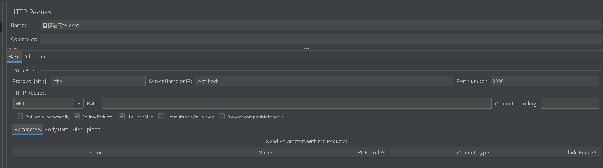

Jmeter
Contents
[[toc]]
Designed to load test functional behavior and measure performance
基础安装
- 官网
- 下载地址
1 2wget https://dlcdn.apache.org//jmeter/binaries/apache-jmeter-5.4.2.tgz tar zxf apache-jmeter-5.4.2.tgz - 运行
1./bin/jmeter
使用
新建
- 新建一个配置，保存
Test Plan>Add>Threads(Users)>Thread Group- 线程数：代表用户数
- Ramp-up period：请求间隔时间
- Loop Count：循环多少次
Thread Group>Add>Sampler>HTTP RequestTest Plan>Add>Listner>Aggregate Report- Average:平均响应时间，单位ms
Author Sloera
LastMod 2021-12-19 (8c481ee)